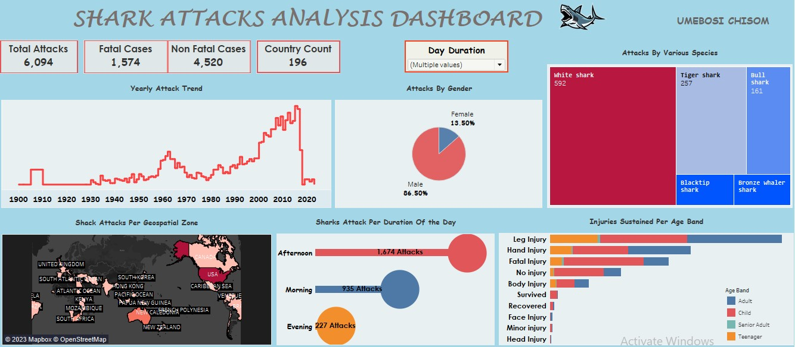
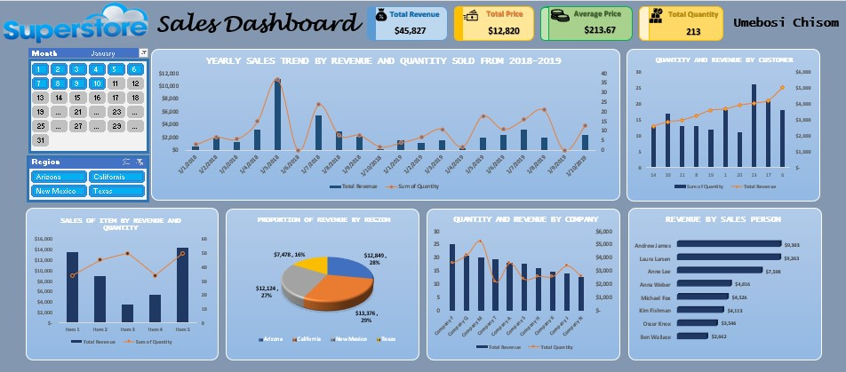
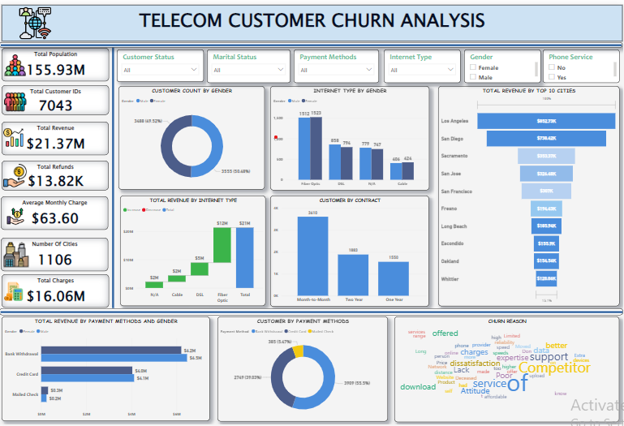
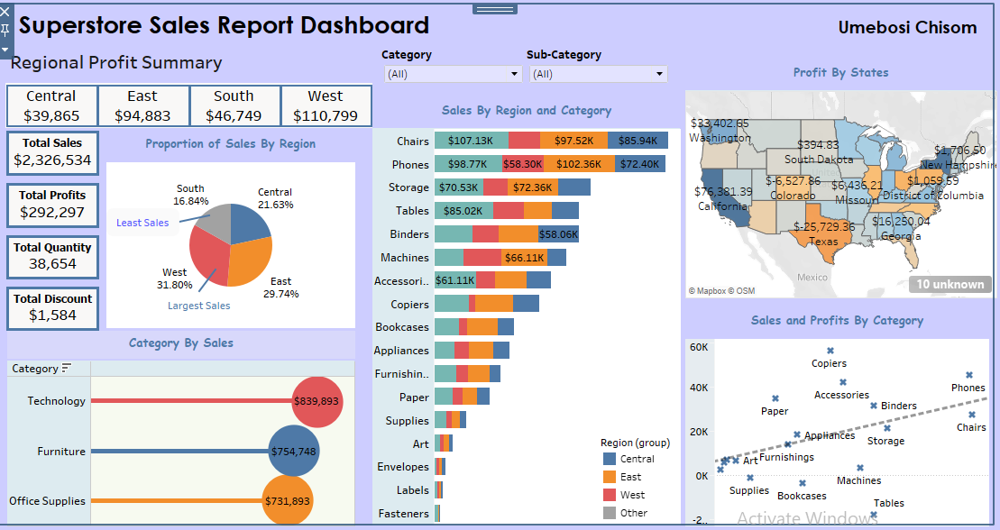
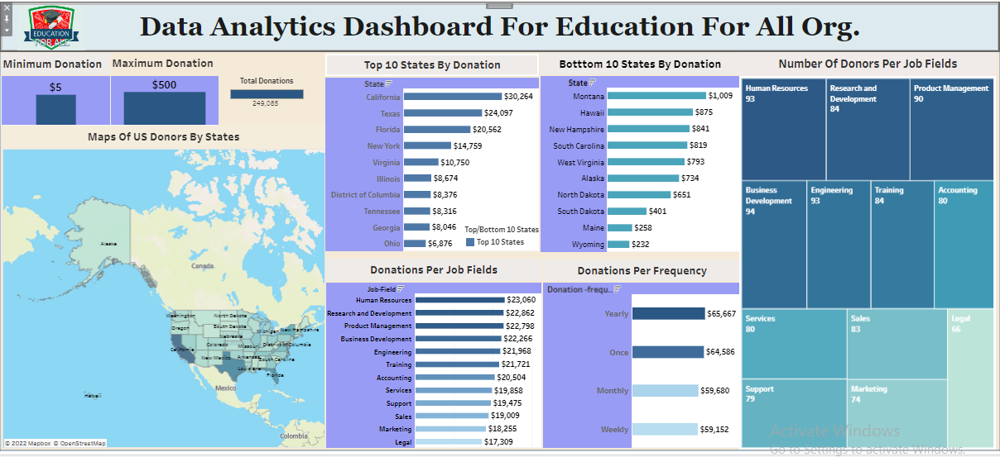
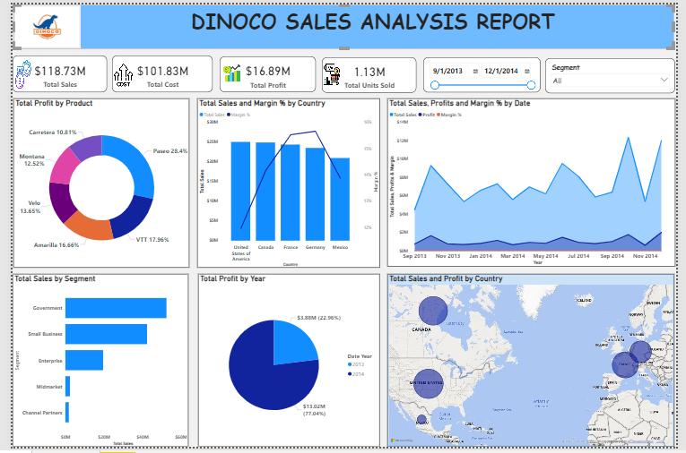
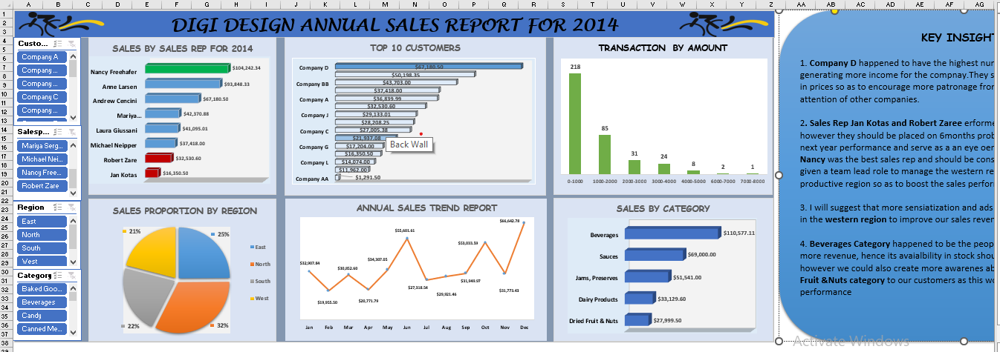

This Project showcases the analysis and visualization of play store data scraped from google play store apps for the period of 2010 - 2018 . This project aims at cleaning the dataset, analyzing the given dataset, and mining informational quality insights. This project also involves visualizing the data to better and easily understand trends and different categories.

The COVID-19 WHO Analysis Dashboard provides a comprehensive overview of the global COVID-19 pandemic, allowing policymakers and public health officials to make informed decisions to combat the spread of the disease.
The key insights that the dashboard provides include:
New Cases and Deaths,
Cumulative Cases and Deaths By country and regions,
Case Fatality Rate,
Hospitalization Rates,
Vaccination Rates and samples,
Trends over Time.

The World Energy Consumption Data Dashboard provides a wealth of insights into global energy consumption patterns, which can help inform policy decisions related to energy production and consumption, energy security, and climate change mitigation. It also provides an overview of global energy consumption patterns across different countries and sectors.
The key insights provided includes:
Total Energy Consumption across different sector, Perennial GDP trend, Yearly Electricity generation trend Annual Energy per GDP trend
Top countries per GDP, Top countries by Oil production and Consumption as well as top countries by Gas production and Gas consumption
Geospatial Information on solar production and consumption etc.

The Shark Attacks Analysis Dashboard was designed to analyze and visualize data related to shark attacks over the past 100 years, including location, activity, victim info (name, gender, age), shark species, etc. This provides insights into the patterns and trends of shark attacks worldwide, which can inform public safety policies and help reduce the risk of shark attacks for beachgoers and swimmers.
The key insights derived are:
Shark Attack Frequency (fatality rate, duration of attack as well as number of attacks yearly), Shark Attack Locations(Geospatial zone),
Victim Demographics (Gender, Age band as well as injuries sustained by different age band), Shark Species Involved (most dangerous species),
Beach and environment safety etc.

This Sales Analysis Dashboard provides a wealth of insights into sales performance, which can help the superstore chain make data-driven decisions to improve their sales strategies, increase revenue, and reduce costs. Insights gotten from this dataset are as follows:
Yealy sales trend by revenue and quantity sold from 2018 to 2019,
Sales of items by revenue and quantity, Proportion of revenue by region of operation
Quantity and revenue by company, Revenue generated by sales representatives and quantity and revenue by various customers.

The telecom customer churn analysis project also known as the rate of attrition or customer churn, is the rate at which customers stop doing business with an entity. It is most commonly expressed as the percentage of service subscribers who discontinue their subscriptions within a given time period. Various Insights were derived when analyzing this dataset which could further bring improvement to the business. they are as follows:
Total Proportion of customers by gender, Proportion of the customer that utilizes the various internet medium
The payment method an the gender that generated more revenue to the business, The proportion of customers that utilizes the different payment method
The cities that generated more revenue to the business, The internet type that generated more revenue to the business.

The Superstore Sales Analysis Dashboard provides an overview of the performance of a superstore chain.
The key insights that a Superstore Sales Analysis Dashboard can provide include:
Sales by Category, Sales by region and subcategory, Sales by Region, Profit by States , Sales and Profit By category

“Education for All”(EFA) is an international initiative that was launched to bring the benefits of education to “every citizen n every society” To realize this aim, a broad coalition of national governments, civil society groups, and development agencies such as UNESCO and world Bank gets fundings for this scheme.
To increase the number of donors, To increase the donation frequency of donors, To increase the value of donations to the charity etc.
The business problem discovered is that it is very difficult to grow funds for charity organizations due to the non-availability of enough frequent donations of fund from individuals which is a major factor. Hence, the need to search for more doors who can donate regularly via a fundraising initiative, is an efficient solution that will help increase the value of donations available for the organization for the following year.

This is sales analysis report for Dinoco Plc showing an overview of key performance indicators (KPIs) related to company sales. The key insights gotten are as follows:
The profit proportion by products sold to ascertain the product that has much demand.
The total sales and margin % by country of sales,
The total sales, profits, and margin % by date,
The total sales, profits by country of sales,
Profit proportion by year, to know the year with the most profit,
The total sales by the product segment and many more.

This sales report shows an overview of the sales activities across all deparments in the company in the year 2014. however the following insights were derived from the analysis.
Annual Sales trend , Total Sales by sales rep, Top 10 customers, Sales Proportion by region of sales, Transaction amount range for products sold, Sales by Product Category etc.